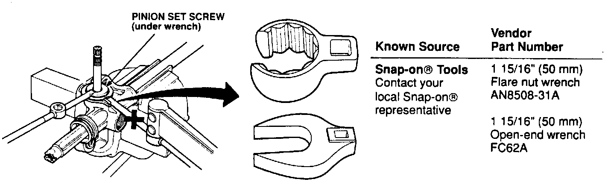

50 mm Wrench For Locknut On Steering Pinion Set Screw (M/S)

The 50 mm locknut wrench (T/N 07MAA-SL0030A) listed in the Service Manual is not available from American Honda. Instead, you must purchase a 1-15/16" crowfoot wrench (either open-end or flare or nut type) from a local source. A conventional 1-15/16" wrench is acceptable, but will generally cost more than the crowfoot style.
This wrench is used to loosen and tighten the locknut on the pinion set screw of an NSX manual steering gearbox. The set screw locknut must be tightened securely, but doing it in combination with a torque wrench as shown in the Service Manual is not necessary. Cross out the tool number and write in "Use a 1-15/16" wrench" on the following pages:
[ ] page 17-2, Ref. No. 4.
[ ] page 17-23, picture in step 7.
[ ] page 17-27, picture in step 20.